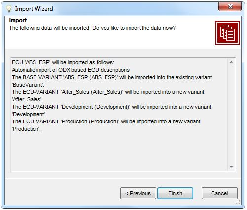

ODX Import Scopes with "Library"
ODX Import is available in ribbon tab Data Exchange | ODX Process [MENU-R210].
ODX Import Scopes with "Library"
The first page of the ODX import wizard selects the scope of the data to import (click a link to read the details in the following chapters):
See at the ODX Import Feature.
Context: you import a complete ODX BASE-VARIANT (corresponding with the CANdela ECU).
Dialogs:
See the handling of libraries in the Complete ODX ECU Description import.
Context: you import selected CANdela variants, based on variants of one ODX BASE-VARIANT.
Dialogs:
See the handling of libraries in the Variants with Selection... import.
Context: you import selected parts from the ODX file.
Dialogs:
See the handling of libraries in the Selected Parts only import.
Context: you import one ECU-SHARED-DATA into a library.
Dialogs:
See the handling of libraries in the Library import.

File Selection for ODX Import
Specify the path to one or more ODX files, or to a PDX file.
For convenience, use the file selection dialog available via the ... button to the right.
The button opens Vector ODXStudio on the ODX file specified in the edit control.

Assigning Diagnostic Variants
The dialog lets you select for each ODX DIAG-LAYER in the import file(s) whether to...
Check this in order to show the Select Services/Jobs dialog as the next wizard step.
If the checkbox is un-checked, the wizard will skip the dialog.

Select Services Jobs
Shows the services/jobs from the import files grouped by DIAG-LAYER (variant) and lets you select each service individually.

Parts Selection
The dialog lets you select which parts of the ODX file(s) to import:
For each part, you have the choice to...
Note: import shows the progress of selection at the lower left: the current part is shown in bold face.

Import Target Selection for DTCs
The combobox Source in Import File at the bottom contains all DTCs lists available in the import file(s), e.g. from multiple ODX variants.
The tree view in the main dialog area shows the DTC lists available in the target document:
Each of them may contain multiple DTCs lists of different length (2 byte, 3 byte).
The string [--] behind a DTC list denotes that it has no DTC list from the import file(s) assigned yet.
Press button Assign source to assign the currently selected Source in Import File to the currently selected target DTC list in the document. As a result, the source is shown behind the target:

Import Targets Assigned for DTCs
In the tree, the icon of the Fault Memory diagnostic instance shows whether the diagnostic instance is referenced in multiple variants or libraries. You can assign an import source only to all referenced diagnostic instances together.

Linking of DTC Columns
The columns of the DTC table are defined in the CANdela template and may therefore differ from document to document. In ODX, the corresponding information is defined in SDGs. Import associates the columns based on their qualifier.
The dialog lets you change the qualifier based default linking:
... to get a combobox with a selection of the remaining (not yet linked) target columns.
The DTC number and the error text are fix properties in the CANdela and in the ODX data model, therefore they are not associated via qualifier and cannot be linked to another column.
Depending on the Display of DTCs setup in the File|Property dialog, there may be additional columns representing parts of the DTC, e.g. the Failure Type Byte and its associated text. You cannot link such part columns individually, they go with the DTC as a whole.
Button Save lets you save the column mapping for later reuse. It prompts for the path and writes the info into that file, like
CorrectiveAction => SpecialInstruction
SetCondition => SetCondition
ResetCondition => ResetConditionButton Load lets you re-apply a previously saved column mapping. After you selected the text file, it immediately adjust the values of the "Import target (qualifier)" column.
Button Preview opens a dialog that shows the DTC columns with the values in the linked columns:
 .
.

DTC Filter
The dialog lets you include or exclude individual DTCs from the import.
Buttons Deselect all and Select all un-check or check all DTCs that can be imported.
DTCs that cannot be imported are shown in red color. When you move the mouse over the row of such a DTC, a tooltip will explain the reason, e.g. the list of enumeration symbols does not match.
Buttons Reduce by criteria and Extend by criteria let you conveniently un-check or check multiple DTCs:

Reduce by DTC Criteria

Filter Data Types
The dialog lets you include or exclude individual data types from the import.
Buttons Deselect all and Select all un-check or check all data types that can be imported.
Data types that cannot be imported are shown in red color. When you move the mouse over the row of such a data type, a tooltip will explain the reason, e.g. a data type with the given qualifier already exists and is referenced in the target document.
Buttons Reduce by criteria and Extend by criteria let you conveniently un-check or check multiple data types:

Reduce by Data Type Criteria

Data Object Steps Selection

Filter Data Objects
The dialog lets you include or exclude individual data objects from the import.
Buttons Deselect all and Select all un-check or check all data objects that can be imported.
Data objects that cannot be imported are shown in red color. When you move the mouse over the row of such a data object, a tooltip will explain the reason.
Buttons Reduce by criteria and Extend by criteria let you conveniently un-check or check multiple data objects:

Reduce by Data Object Criteria

Select ECU-SHARED-DATA
The dialog...

Import Summary
Shows a summary of data that will be imported.
You can

Import Progress
The dialog shows the progress of the import with details about the imported objects and the percentage done, and lets you finally Close the dialog.